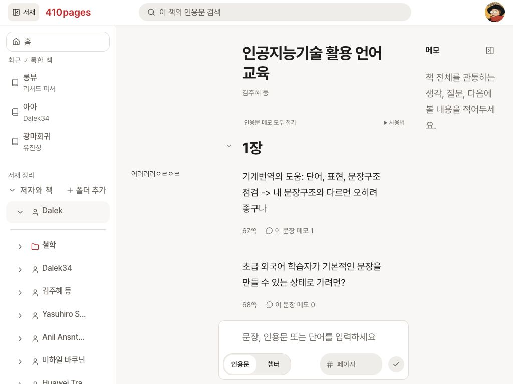
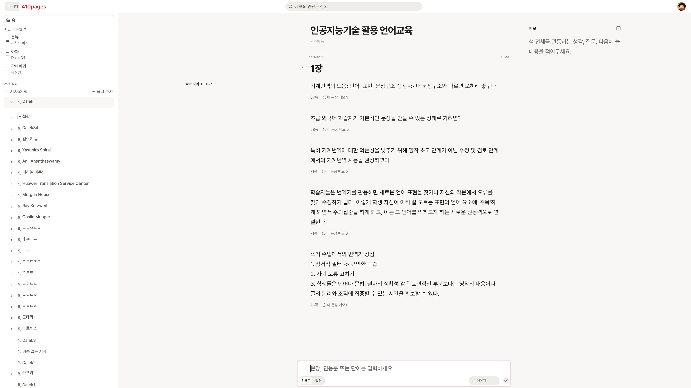

서재 폭과 읽기 중심 수정 완료
서재를 펼치면 서재를 제외한 공간의 중앙으로 제목·본문·입력창을 함께 옮깁니다. 접으면 전체 화면 중앙으로 돌아옵니다.
큰 화면에서 멈추던 서재 폭 확대를 없애고, 화면 비율에 따라 폭과 상한을 계산하도록 변경했습니다.
실제 앱 측정
기존 글자 설정 14pt, 서재 폭 선호값 232를 유지했습니다. 단위는 CSS px입니다.
| 화면과 상태 | 서재 폭 | 본문 중심 X | 댓글 / 본문 / 메모 글 영역 |
|---|---|---|---|
| 1024 × 768 · 서재 열림 | 232 | 628 | 144 / 288 / 144 |
| 3840 × 2160 · 서재 열림 | 655.05 | 2247.52 | 522.86 / 1045.72 / 522.86 |
| 3840 × 2160 · 서재 닫힘 | 0 | 1919.99 ≈ 1920 | 전체 화면 기준으로 다시 계산 |
본문 중심은 서재 폭 + 남은 화면 폭 ÷ 2입니다. 3840에서 열린 경우 (655.05 + 3840) ÷ 2 = 2247.53으로 실제 측정값과 일치했습니다. 두 화면 모두 가로 넘침이 없었습니다.
반영한 결정
사용자 결정: 열린 서재를 제외한 공간의 중앙으로 다시 배치하고, 서재 폭 상한을 화면 비율에 맞춰 키웠습니다. 이전의 전체 화면 중심 고정 규칙은 이 수정으로 대체했습니다.
Codex 구현값: 1360px 이상에서 기본 서재 폭은 화면의 약 20%, 최대는 30%입니다. 기존 수동 폭 선호는 유지하므로 현재 선호값에서는 약 17.1%입니다. 3840에서 최대 폭은 1152px이며 더 넓은 화면에서도 함께 커집니다. 드래그·키보드 폭 조절도 같은 한계를 사용합니다.
기존 동작 유지: 기본 글 영역 1:2:1, 사용자 글자 설정, 좁은 공간에서 서재 자동 접기·겹쳐 열기, 초안과 읽던 위치 유지, 메모 자동저장·복구, 모바일 화면은 유지했습니다.
검증
전체 84개 파일·592개 테스트, 타입 검사와 프로덕션 빌드를 통과했습니다. 이번 수정 관련 27개 검사에는 남은 공간 중심, 화면 비율 상한, 폭 조절과 공간 부족 시 서재 동작이 포함됩니다.
실제 1024에서 제목·본문·입력창 시작선과 중심이 일치했습니다. 빈 입력칸과 첫 글자 입력 후 모두 박스 119px·입력 영역 45px로 유지됐습니다. 시험 글자는 지웠고 새 인용문은 저장하지 않았습니다. 실제 3840에서 서재 개폐 후 중심 이동도 확인했습니다.
인앱 브라우저의 CSS 화면 크기로 검증했습니다. 물리 모니터별 표시 배율·읽는 거리의 체감은 확인하지 않았습니다. 새로 결정할 항목은 없습니다.
실제 앱 화면
1024 · 서재를 제외한 공간의 중앙

3840 · 화면 비율에 따라 커진 서재

검사·빌드 프로세스는 종료했습니다. 기존 로컬 서버와 실제 책 탭은 검토용으로 유지했으며, 별도 서버나 브라우저 탭을 추가하지 않았습니다.